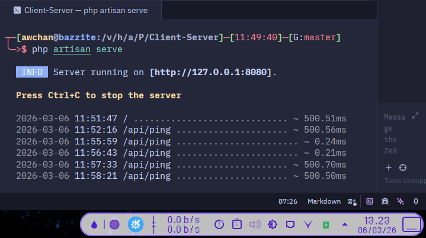
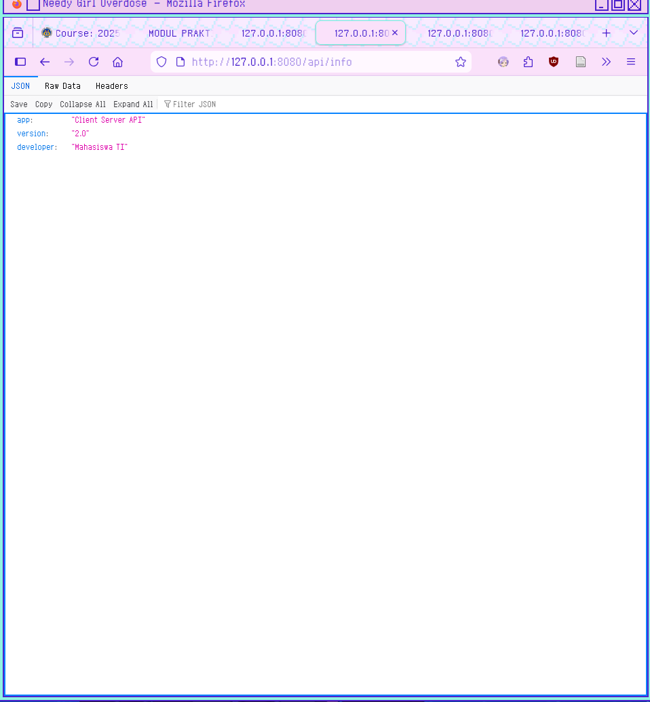
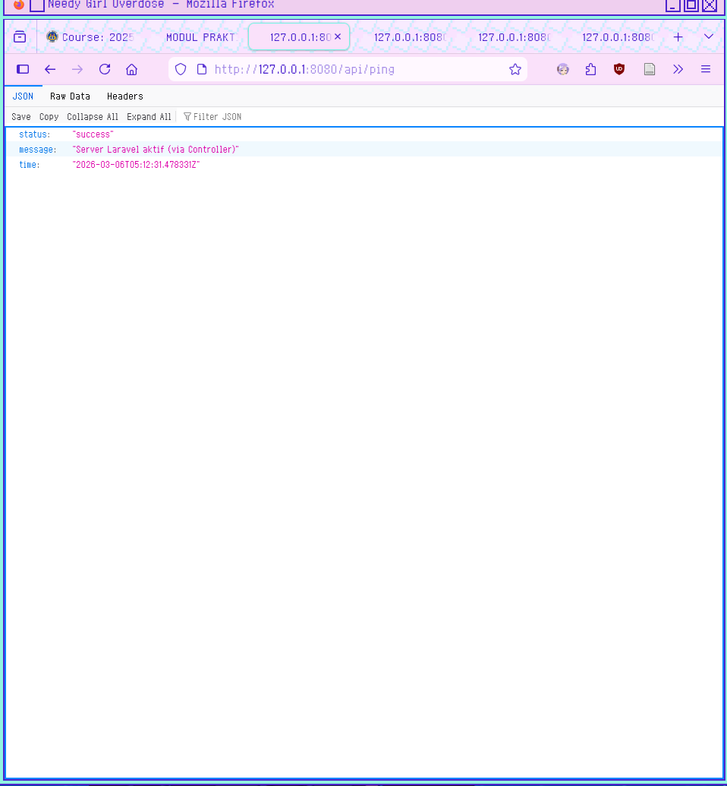
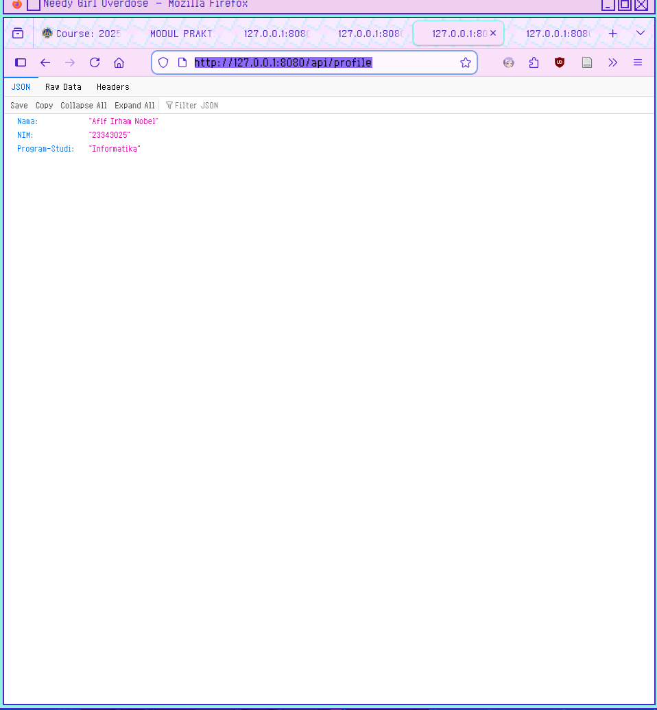
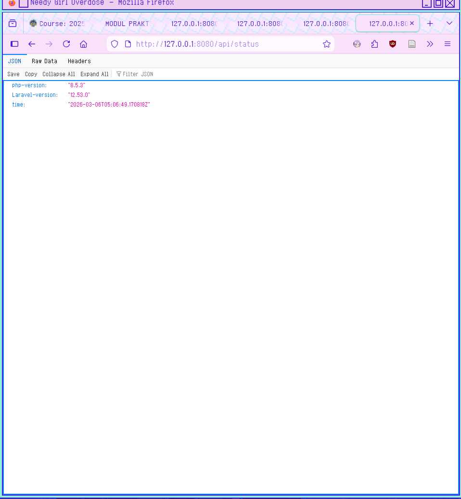

Laporan Praktikum 2
1. Kenapa Controller lebih baik daripada Closure?
Secara teknis, Closure (fungsi anonim langsung di file route) memang bekerja, tapi Controller menang dalam hal manajemen kode.
- Caching Route: Laravel memiliki fitur
route:cacheyang mempercepat performa aplikasi secara signifikan. Sayangnya, Laravel tidak bisa melakukan cache pada rute yang menggunakan Closure. - Kerapihan (Clean Code): Closure membuat file rute (seperti
web.php) menjadi sangat panjang dan sulit dibaca jika logika aplikasi sudah kompleks. - Dependency Injection: Meskipun Closure mendukungnya, Controller jauh lebih bersih dalam menangani constructor injection untuk memanggil berbagai Service atau Repository.
2. Apa Keuntungan Pemisahan Routing & Logic?
Bayangkan file routing sebagai peta jalan dan Controller sebagai tujuannya. Jika peta jalan dicampur dengan bangunan tujuannya, peta tersebut akan sulit dibaca.
Contoh Perbandingan:
Menggunakan Closure (Buruk untuk skala besar):
// routes/web.php
Route::get('/user/{id}', function ($id) {
$user = User::findOrFail($id);
// Logika bisnis yang panjang...
return view('user.profile', ['user' => $user]);
});
Menggunakan Controller (Lebih Rapi):
// routes/web.php
use App\Http\Controllers\UserController;
Route::get('/user/{id}', [UserController::class, 'show']);
// app/Http/Controllers/UserController.php
public function show($id) {
$user = User::findOrFail($id);
return view('user.profile', compact('user'));
}
Keuntungan Utama:
- Reusability: Logika di Controller bisa dipanggil oleh rute lain (misal: rute web dan rute API).
- Organisasi: Kamu tahu persis di mana harus mencari kode jika ingin mengubah fitur tertentu.
- Kolaborasi: Developer A bisa fokus merapikan rute, sementara Developer B fokus memperbaiki logika di Controller.
3. Bagaimana jika Project Makin Besar?
Saat project tumbuh menjadi ribuan baris kode, Controller biasa pun bisa menjadi "gemuk" (Fat Controller). Di sinilah pola arsitektur lanjutan berperan:
| Strategi | Penjelasan |
|---|---|
| Single Action Controller | Menggunakan satu Controller hanya untuk satu tugas (menggunakan method __invoke). |
| Service Pattern | Memindahkan logika bisnis dari Controller ke class Service terpisah. |
| Request Validation | Menggunakan FormRequest agar Controller tidak penuh dengan aturan validasi if-else. |
Contoh Struktur Project Besar:
Jika project sudah sangat besar, Controller kamu seharusnya hanya "menerima tamu" dan "memberikan jawaban", bukan "memasak di dapur".
// app/Http/Controllers/OrderController.php
public function store(OrderRequest $request, OrderService $orderService)
{
// Validasi otomatis dilakukan oleh OrderRequest
// Logika bisnis dilakukan oleh Service
$order = $orderService->createOrder($request->validated());
return response()->json($order, 201);
}
Tugas Laporan
1. Screenshot Server Aktif

Keterangan: Menunjukkan pesan "Server running on [http://127.0.0.1:8080]"
2. Screenshot Hasil Endpoint
Info

ping

profile

status
